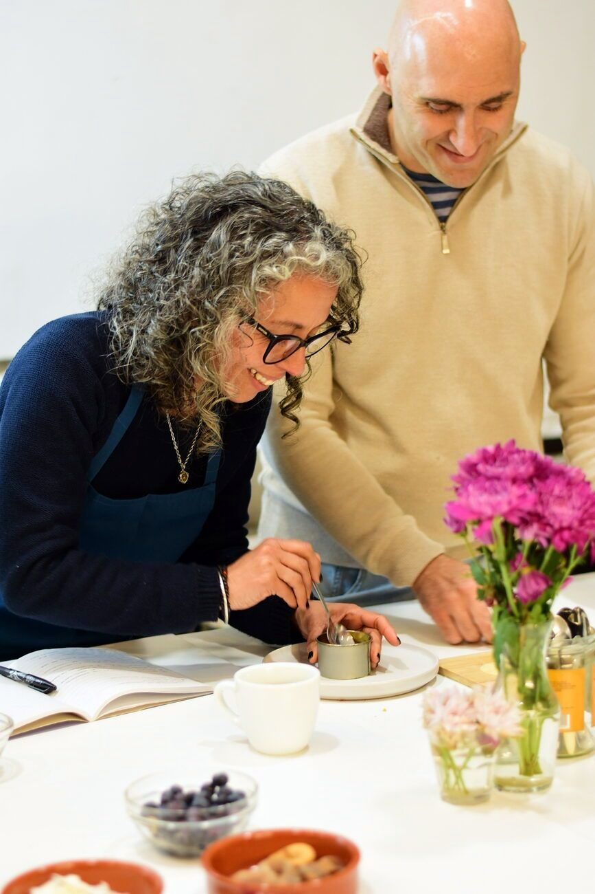
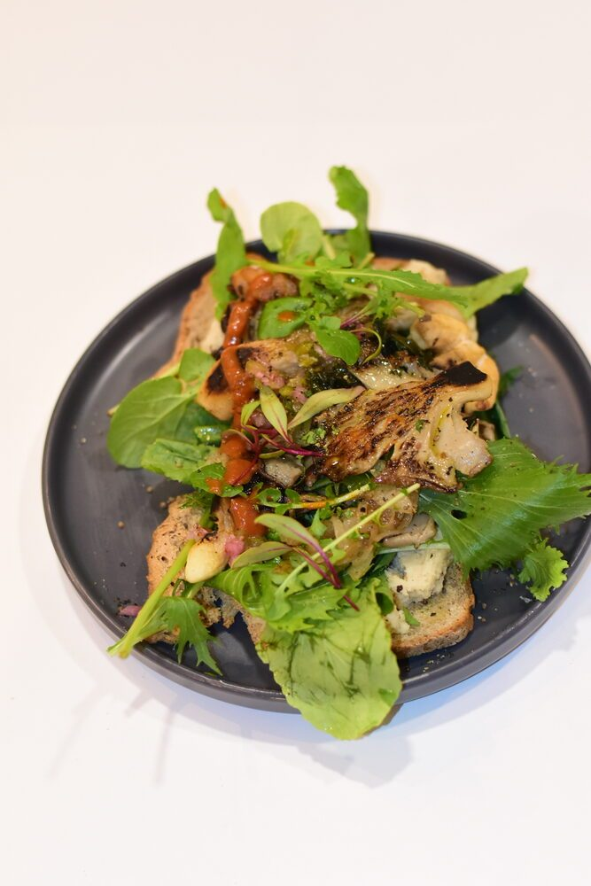
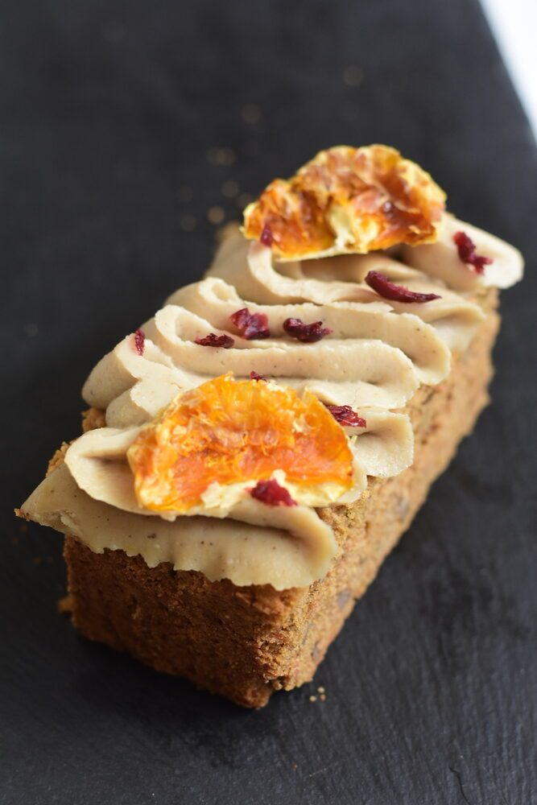
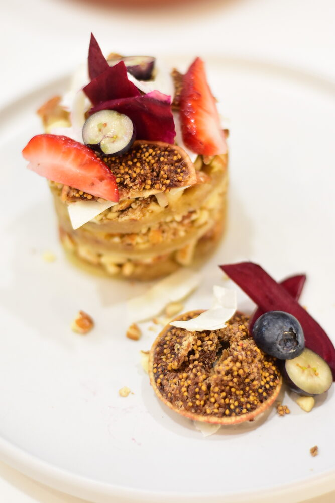
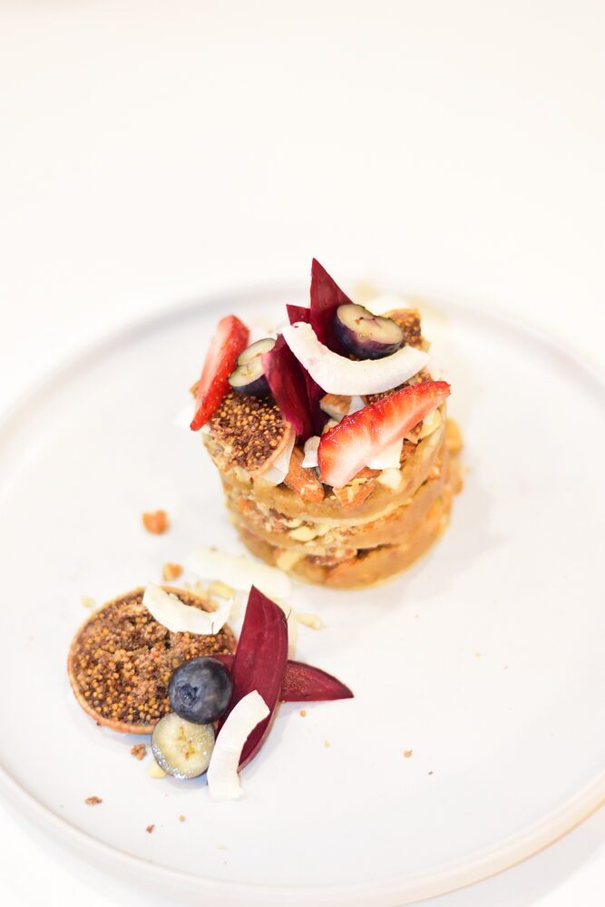

Parque Rodó · Montevideo · Desde 2013
Cocinar bien para entender mejor.
No enseñamosUn estudio en Parque Rodó donde aprendés a comprender los alimentos en lugar de seguir recetas. Curso de tres meses y talleres puntuales de cocina vegana —nosotros le decimos basada en plantas— con criterio propio y sin depender de instrucciones.

Lo que podés reservar ahora.
Grupos reducidos. Cuando se llenan, se llenan.
- Últimos lugares
Cena y Taller de Tapeo
jueves 20 de agosto · 19:00 a 22:30 h
$2.600 por persona
Ver la experiencia → - Segunda fecha
Cena y Taller de Tapeo
viernes 21 de agosto · 19:00 a 22:30 h
$2.600 por persona
Ver la experiencia → - Fecha abierta
Pastas sin gluten
jueves 3 de septiembre · 10:00 a 13:30 h
$2.897
Ver el taller → - Segunda fecha
Pastas sin gluten
viernes 4 de septiembre · 10:00 a 13:30 h
$2.897
Ver el taller →
Criterio antes que receta.
Una receta funciona hasta que algo cambia. El criterio funciona siempre — porque no depende de números, sino de lo que ves, olés y tocás.
Con una receta
"Zanahoria al horno: 200°C, 25 minutos, cubos de 2 cm."
Esos números sirven solo en las condiciones exactas en que se escribieron. Si tu horno calienta distinto, el corte es otro o la zanahoria trae más agua, el resultado cambia — y no sabés por qué.
Con criterio
"Buscás que los bordes se caramelicen y que el centro ceda al pincharlo."
Puede pasar a los 18 minutos o a los 35: da igual. Estás leyendo la cocción real, no mirando el reloj. Las señales no mienten; los números, a veces sí.

Para quién es Clorofila.
No hace falta experiencia previa. Podés llegar sin saber hervir agua — lo que importa es la disposición para aprender de verdad.
Es para vos si
- Querés entender qué pasa en la cocina, no solo seguir pasos.
- Te llaman la atención la fermentación, la masa madre, la cocina basada en plantas.
- Valorás aprender con profundidad antes que rápido.
- Buscás poder cocinar sin depender de recetas ni instrucciones.
- Preferís el proceso y la calidad por encima de los atajos.
El único requisito real es la disposición para involucrarse.
Una cocina con postura.
Clorofila nació en 2013 con una convicción: en Uruguay no había un espacio serio para aprender a cocinar saludable de verdad. No como moda — como práctica.
"Cuando comprendés por qué algo funciona, podés cocinar lo que quieras — sin depender de una receta ni tener miedo de improvisar."
No enseñamos pasos. Enseñamos procesos. No enseñamos a copiar — enseñamos a observar, a interpretar, a decidir. Cuando entendés eso, la autonomía en la cocina no es un objetivo: es una consecuencia.
Conocer más sobre Clorofila →

Antes y después.
No es un cambio de recetas. Es un cambio en cómo pensás la cocina.
Antes
- Dependencia de recetas paso a paso
- Inseguridad al cocinar sin instrucciones
- Repetición mecánica sin comprensión
- Dificultad para improvisar o corregir
- Sensación de seguir pasos sin entender el por qué
Después
- Cocinás sin receta, con lo que hay en casa
- Entendés por qué algo funcionó — o por qué no
- Podés improvisar, adaptar y corregir sobre la marcha
- Autonomía real: sin instrucciones, sin depender de nadie
- Una cocina cotidiana más confiante y menos ansiosa
Al terminar, podés resolver en la cocina lo que antes necesitabas una receta para hacer.
Manos en la masa desde el primer día.
Trabajamos en grupos reducidos alrededor de una mesa grande, cada quien con su espacio, sus herramientas e ingredientes. No mirás cocinar: cocinás. Y al final, nos sentamos a comer juntos lo que preparamos.

Cocinás, no mirás
Desde el primer día tenés las manos en la masa. Se aprende haciendo, no observando.
Entendés mientras hacés
Leonardo explica el por qué de cada proceso en el momento, no antes. La comprensión llega con las manos.
Compartís la mesa
Probás todo lo que preparás y cerramos comiendo juntos. La comunidad se construye en la mesa.
Lo que se cocina acá
Elaboraciones reales de clases y talleres — todo basado en plantas.

Cheesecake de frutillas

Alfajores

Tosta de hongos

Pastelería

Postre emplatado
En sus propias palabras.
4,9 · 21 opiniones en Google Leerlas todas →★★★★★
«No son recetas que seguís como instrucciones — aprendés a pensar. Eso no lo encontré en ningún otro lado.»
★★★★★
«Lo que más me sorprendió fue entender el por qué de cada técnica. Ahora improviso con lo que hay en casa y me sale bien. Eso antes no me pasaba.»
★★★★★
«No es un curso de recetas. Es aprender a pensar la cocina de otra manera. Cambió completamente mi relación con la comida y con el tiempo que le dedico.»
★★★★★
«Excelente los cursos, gran persona Leo, se nota la pasión por la cocina saludable, tuve el gusto de trabajar con él y es una fuente de conocimientos, hermoso el espacio, uso y recomiendo!»
Reservá tu lugar.
Los grupos son reducidos. Dejá tus datos y te contactamos para coordinar la inscripción — respondemos personalmente antes de que se llenen los cupos.
Talleres y experiencias
Desde una noche de cocina y cena hasta talleres de técnica específica. Sin compromiso previo.


Pan sin gluten con masa madre
Fermentación, hidratación y técnica para panes sin gluten ni aditivos.
Ver taller →Alfajores plant-based
Pastelería sin lácteos ni huevos con técnica real — no sustitución, comprensión.
Ver taller →
Quesos vegetales
Fermentación y maduración aplicadas a quesos de cajú. Sin ingredientes de origen animal.
Ver taller →
Pastas sin gluten
Hidratación, almidones y técnica de amasado para pastas sin gluten que realmente funcionan.
Ver taller →Domingo de Buncheo
Un domingo al mes, brunch basado en plantas en el estudio. Sin delantal: venís a comer.
Ver la experiencia →